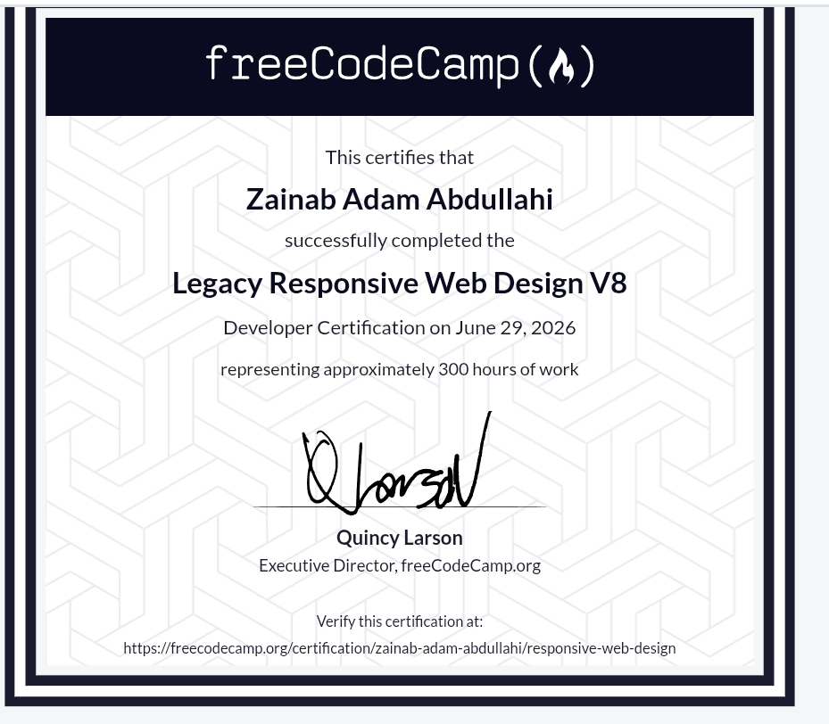

Architecting Functional Logic Across Dynamic Environments.
Focused on building low-latency application structures, semantic clean layouts, and data-driven systems execution.
System Biography
I am Hasheem, a software developer deeply committed to writing code that runs efficiently and handles data transparently. I approach software engineering as an architectural puzzle—structuring clean backend code and frontend presentation components so they scale cleanly together.
Currently deep in my 200 Level within the Software Engineering department at Northwest University, Kano (YUMSUK), I tailor my focus to optimizing standard data pipelines, logic systems, and accessible interface designs.
Academic Foundations
B.Sc. Software Engineering
Level 200 RunNorthwest University, Kano
Deepening my functional skillset in computer science structures, modular code design, object-oriented paradigms, relative database behaviors, and safe network communication flows.
Engine Metrics
An honest engineering self-assessment measuring where my practical execution confidence lies, skipping basic graphic template badges.
Production Build History
Unified Asynchronous Engineering Portfolio
Vanilla Architecture Engine / HTML5 DOM Handling / Fluid Styling Controls
My primary production-grade environment. Handcrafted entirely from the ground up without using visual site builders or framework bundles, this system runs custom viewport routing scripts, fluid multi-screen size handling rules, and clean, balanced typographic hierarchies.
Verified Certifications

Ecosystem Tooling
GitHub
Vercel
Netlify
Render
Engineering Axiom
"Clean code should act like well-written prose—clear, intentional, and structured with purpose. True development competence isn't about adding decorative layers, but about optimizing underlying data operations."
I build web assets with an extreme focus on simple structures and rapid runtime performance. Every markup element, layout parameter, and scripting rule is written intentionally, ensuring code maintainability and long-term viability from day one.
Strategic Growth Tracks
Isolate, build, and optimize secure asynchronous server endpoints using structured modern Node.js application platforms.
Integrate relational database management systems cleanly into application codebases to handle safe, continuous transaction workflows.
Contribute open-source assets built to optimize web performance and loading speeds over varying regional consumer data networks.
Secure Access Connection
Open for technical software design alignments, deployment assignments, or system architecture partnerships.